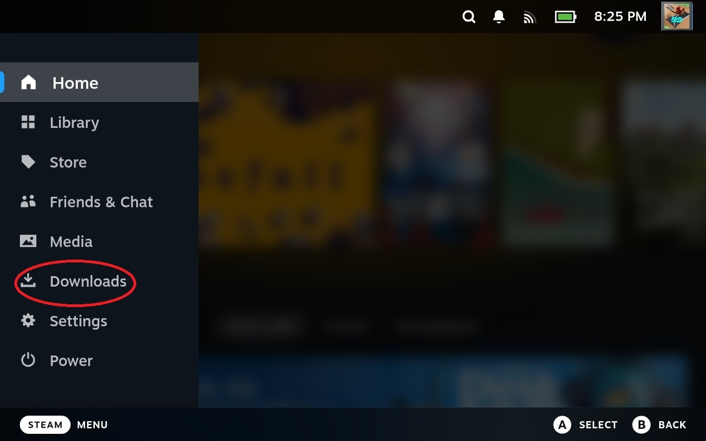
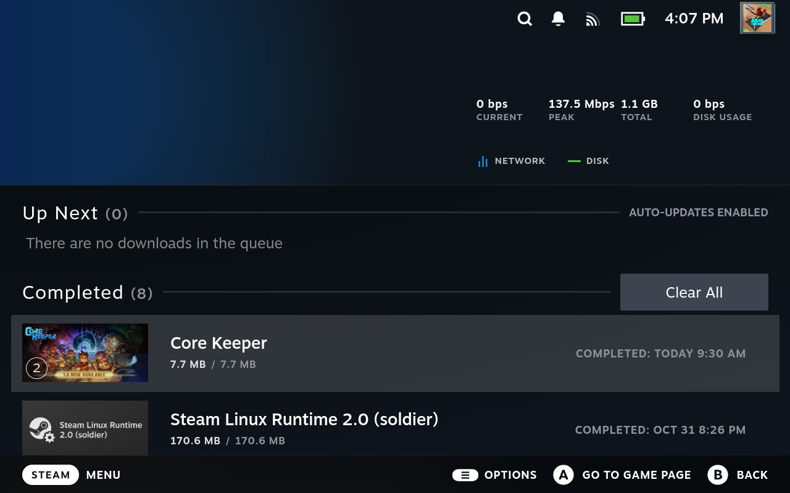
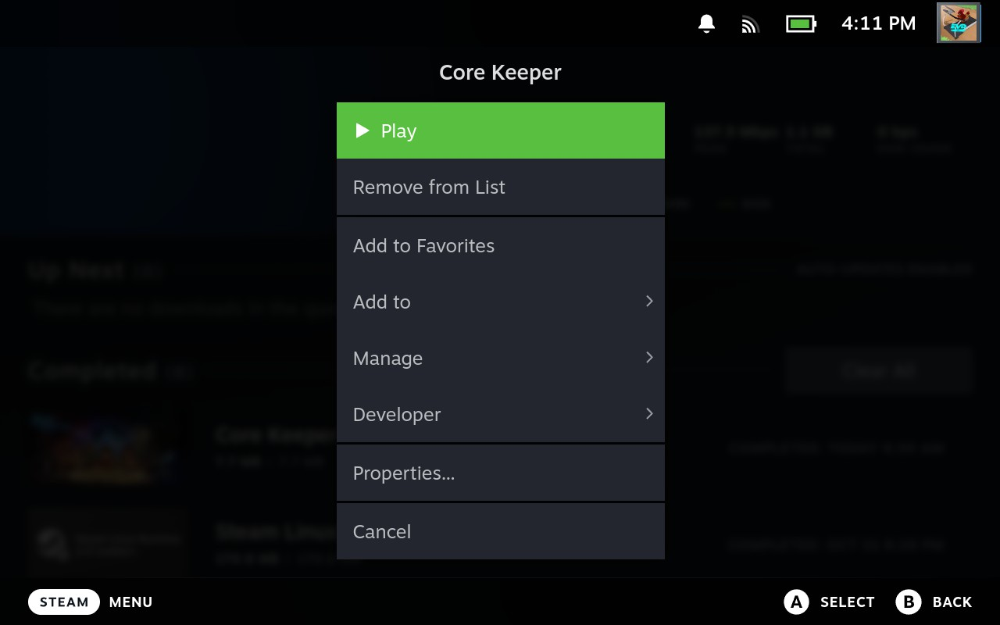

9. Downloads
9.1 How to Access the Downloads Menu
The option allows you to view your Steam Deck's latest downloads. This is where you will find the progress of any games you are downloading. You can also view any updates to your games here.
Within the Downloads menu, you can also click the on any of the titles to be taken to that game's page:
9.2 Download Options
Navigating over a game and pressing the allows you to do several things.
: Plays the game
: Removes the game from the Downloads List
: adds the game to your Favorites menu
Add the game to a new collection
Manage the game: